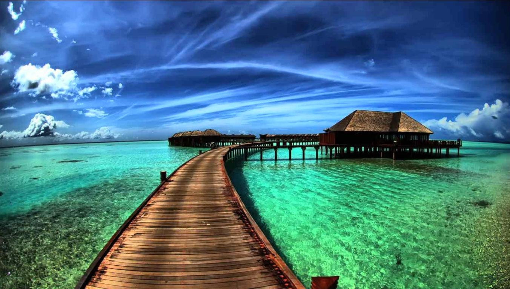
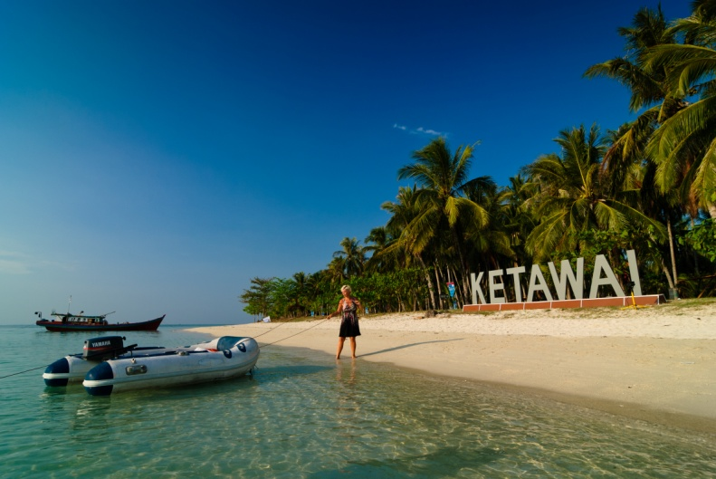
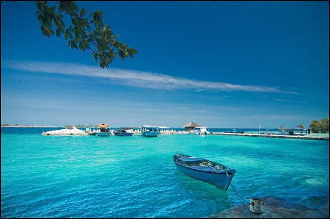

Baca selengkapnya >>>>>
PULAU KETAWAI
Profile Singkat PULAU KETAWAI
Kekayaan wisata bahari indonesia sangatlah banyak dan beragam, namun kekayaan wisata bahari indonesia banyak yang masih belum di gali potensinya. Salah satu kekayaan wisata bahari indonesia yang berada di kabupaten bangka tengah propinsi Bangka Belitung ....Baca selengkapnya >>>>>

Baca selengkapnya >>>>>
PULAU PUTRI DAN PULAU LAMPU
Profile singkat tentang PULAU PUTRI
Satu lagi surga baru di pulau Bangka yang telah kami siapkan untuk Anda. Sebagai Tour Operator Lokal Terbaik dan Terpercaya di Bangka Belitung, team Bangka Tour tak pernah berhenti menjajal berbagai objek wisata yang layak untuk kami jadikan destinasi baru bagi Anda....Baca selengkapnya >>>>>
PANTAI - PANTAI DIPULAU BANGKA BELITUNG
Selain dikenal sebagi penghasil timah, Provinsi Bangka Belitung juga dikenal sebagai wilayah yang mempunyai banyak pantai yang indah. Sehingga tidak heran jika banyak para wisatawan, baik lokal, domestik, maupun wisatawan mancanegara banyak yang berkunjung di Bangka Belitung untuk menikmati keindahan pantainya....
Baca selengkapnya di tempat wisata unik >>>>>